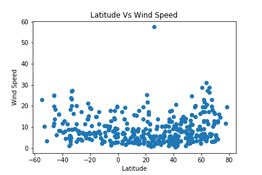

The relationship between Latitude and Wind Speed
isn't well established. This would lead to suggest
that while the prevailing winds tend to move from
East to West due to the Coriolis affect
(source: https://www.nationalgeographic.org/encyclopedia/wind/).
There are five major wind zones (polar easterlies,
westerlies, horse latitudes, trade winds, and the
doldrums.) but these are not exclusive to latitude-
oriented headings at specific latitudes. Perhaps
by using bins to find groups either at latitudes
or within hemispheres these trends could be better
isolated. That is research for the future...